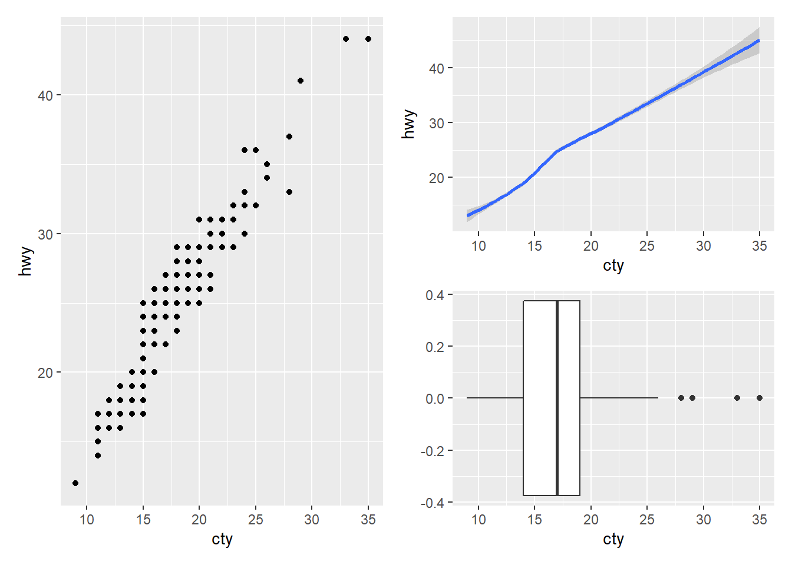
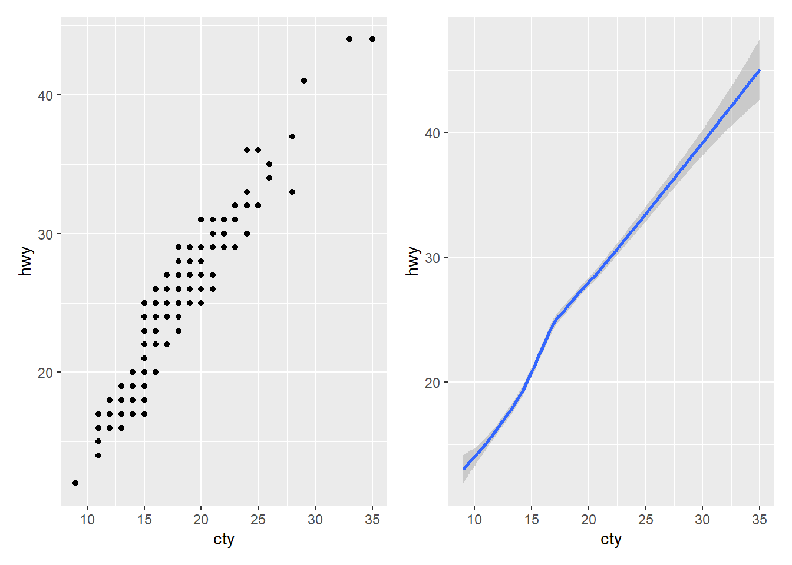
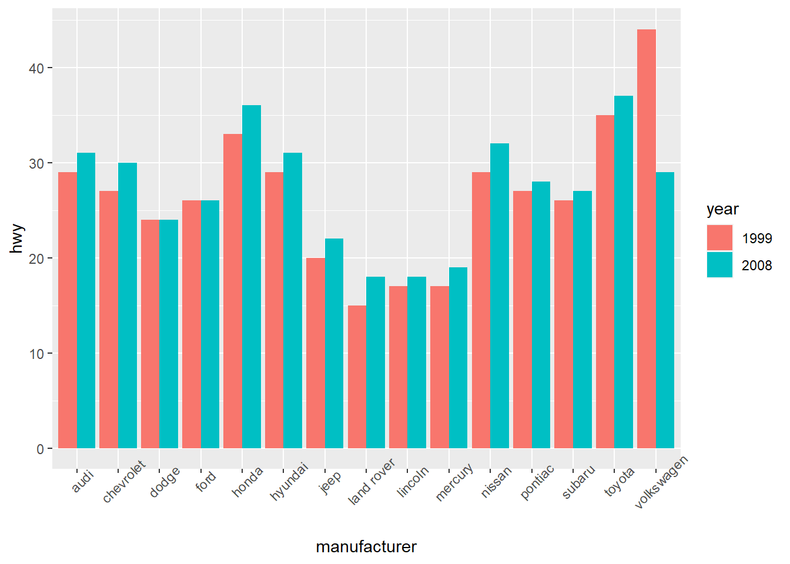
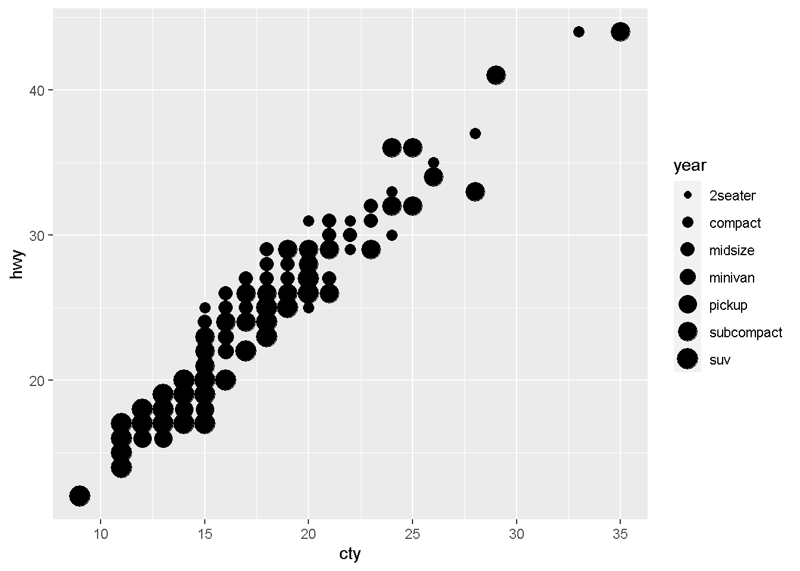
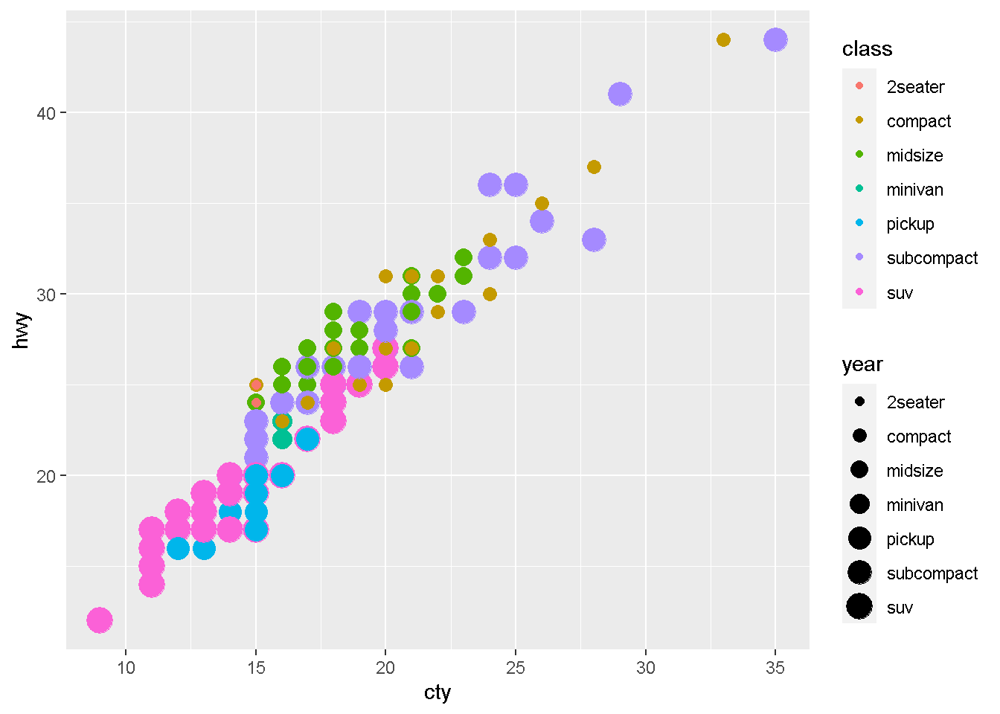
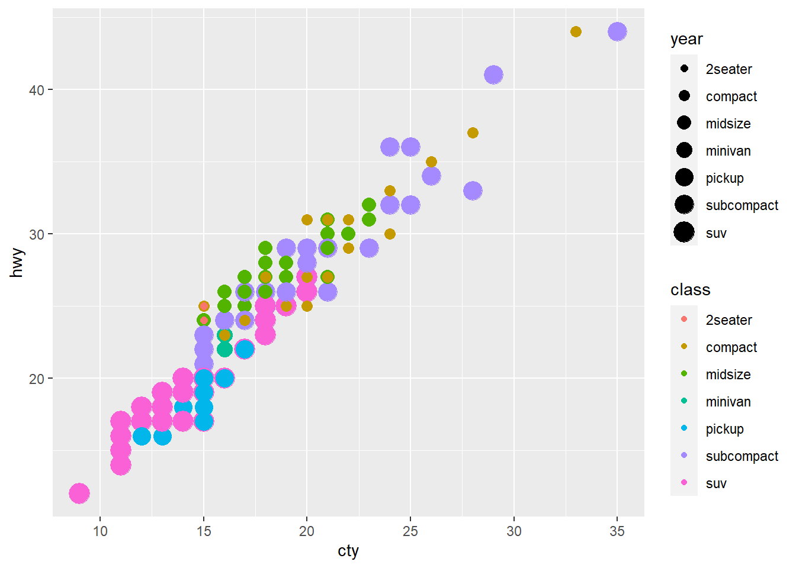
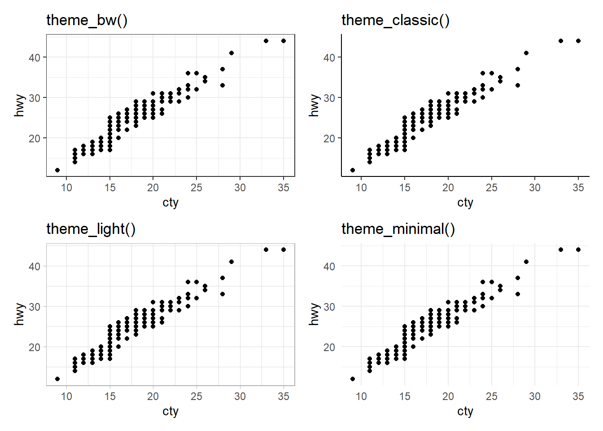

Capítulo 3 ggplot2 (60 minutos)
Alguns links
120 registered extensions available to explore
ls("package:ggplot2")## [1] "%+%" "%+replace%"
## [3] "aes" "aes_"
## [5] "aes_all" "aes_auto"
## [7] "aes_q" "aes_string"
## [9] "after_scale" "after_stat"
## [11] "alpha" "annotate"
## [13] "annotation_custom" "annotation_logticks"
## [15] "annotation_map" "annotation_raster"
## [17] "arrow" "as_label"
## [19] "as_labeller" "autolayer"
## [21] "autoplot" "AxisSecondary"
## [23] "benchplot" "binned_scale"
## [25] "borders" "calc_element"
## [27] "combine_vars" "continuous_scale"
## [29] "Coord" "coord_cartesian"
## [31] "coord_equal" "coord_fixed"
## [33] "coord_flip" "coord_map"
## [35] "coord_munch" "coord_polar"
## [37] "coord_quickmap" "coord_sf"
## [39] "coord_trans" "CoordCartesian"
## [41] "CoordFixed" "CoordFlip"
## [43] "CoordMap" "CoordPolar"
## [45] "CoordQuickmap" "CoordSf"
## [47] "CoordTrans" "cut_interval"
## [49] "cut_number" "cut_width"
## [51] "derive" "diamonds"
## [53] "discrete_scale" "draw_key_abline"
## [55] "draw_key_blank" "draw_key_boxplot"
## [57] "draw_key_crossbar" "draw_key_dotplot"
## [59] "draw_key_label" "draw_key_path"
## [61] "draw_key_point" "draw_key_pointrange"
## [63] "draw_key_polygon" "draw_key_rect"
## [65] "draw_key_smooth" "draw_key_text"
## [67] "draw_key_timeseries" "draw_key_vline"
## [69] "draw_key_vpath" "dup_axis"
## [71] "economics" "economics_long"
## [73] "el_def" "element_blank"
## [75] "element_grob" "element_line"
## [77] "element_rect" "element_render"
## [79] "element_text" "enexpr"
## [81] "enexprs" "enquo"
## [83] "enquos" "ensym"
## [85] "ensyms" "expand_limits"
## [87] "expand_scale" "expansion"
## [89] "expr" "Facet"
## [91] "facet_grid" "facet_null"
## [93] "facet_wrap" "FacetGrid"
## [95] "FacetNull" "FacetWrap"
## [97] "faithfuld" "find_panel"
## [99] "flip_data" "flipped_names"
## [101] "fortify" "Geom"
## [103] "geom_abline" "geom_area"
## [105] "geom_bar" "geom_bin_2d"
## [107] "geom_bin2d" "geom_blank"
## [109] "geom_boxplot" "geom_col"
## [111] "geom_contour" "geom_contour_filled"
## [113] "geom_count" "geom_crossbar"
## [115] "geom_curve" "geom_density"
## [117] "geom_density_2d" "geom_density_2d_filled"
## [119] "geom_density2d" "geom_density2d_filled"
## [121] "geom_dotplot" "geom_errorbar"
## [123] "geom_errorbarh" "geom_freqpoly"
## [125] "geom_function" "geom_hex"
## [127] "geom_histogram" "geom_hline"
## [129] "geom_jitter" "geom_label"
## [131] "geom_line" "geom_linerange"
## [133] "geom_map" "geom_path"
## [135] "geom_point" "geom_pointrange"
## [137] "geom_polygon" "geom_qq"
## [139] "geom_qq_line" "geom_quantile"
## [141] "geom_raster" "geom_rect"
## [143] "geom_ribbon" "geom_rug"
## [145] "geom_segment" "geom_sf"
## [147] "geom_sf_label" "geom_sf_text"
## [149] "geom_smooth" "geom_spoke"
## [151] "geom_step" "geom_text"
## [153] "geom_tile" "geom_violin"
## [155] "geom_vline" "GeomAbline"
## [157] "GeomAnnotationMap" "GeomArea"
## [159] "GeomBar" "GeomBlank"
## [161] "GeomBoxplot" "GeomCol"
## [163] "GeomContour" "GeomContourFilled"
## [165] "GeomCrossbar" "GeomCurve"
## [167] "GeomCustomAnn" "GeomDensity"
## [169] "GeomDensity2d" "GeomDensity2dFilled"
## [171] "GeomDotplot" "GeomErrorbar"
## [173] "GeomErrorbarh" "GeomFunction"
## [175] "GeomHex" "GeomHline"
## [177] "GeomLabel" "GeomLine"
## [179] "GeomLinerange" "GeomLogticks"
## [181] "GeomMap" "GeomPath"
## [183] "GeomPoint" "GeomPointrange"
## [185] "GeomPolygon" "GeomQuantile"
## [187] "GeomRaster" "GeomRasterAnn"
## [189] "GeomRect" "GeomRibbon"
## [191] "GeomRug" "GeomSegment"
## [193] "GeomSf" "GeomSmooth"
## [195] "GeomSpoke" "GeomStep"
## [197] "GeomText" "GeomTile"
## [199] "GeomViolin" "GeomVline"
## [201] "get_alt_text" "get_element_tree"
## [203] "gg_dep" "ggplot"
## [205] "ggplot_add" "ggplot_build"
## [207] "ggplot_gtable" "ggplotGrob"
## [209] "ggproto" "ggproto_parent"
## [211] "ggsave" "ggtitle"
## [213] "guide_axis" "guide_bins"
## [215] "guide_colorbar" "guide_colorsteps"
## [217] "guide_colourbar" "guide_coloursteps"
## [219] "guide_gengrob" "guide_geom"
## [221] "guide_legend" "guide_merge"
## [223] "guide_none" "guide_train"
## [225] "guide_transform" "guides"
## [227] "has_flipped_aes" "is.Coord"
## [229] "is.facet" "is.ggplot"
## [231] "is.ggproto" "is.theme"
## [233] "label_both" "label_bquote"
## [235] "label_context" "label_parsed"
## [237] "label_value" "label_wrap_gen"
## [239] "labeller" "labs"
## [241] "last_plot" "layer"
## [243] "layer_data" "layer_grob"
## [245] "layer_scales" "layer_sf"
## [247] "Layout" "lims"
## [249] "luv_colours" "map_data"
## [251] "margin" "max_height"
## [253] "max_width" "mean_cl_boot"
## [255] "mean_cl_normal" "mean_sdl"
## [257] "mean_se" "median_hilow"
## [259] "merge_element" "midwest"
## [261] "mpg" "msleep"
## [263] "panel_cols" "panel_rows"
## [265] "Position" "position_dodge"
## [267] "position_dodge2" "position_fill"
## [269] "position_identity" "position_jitter"
## [271] "position_jitterdodge" "position_nudge"
## [273] "position_stack" "PositionDodge"
## [275] "PositionDodge2" "PositionFill"
## [277] "PositionIdentity" "PositionJitter"
## [279] "PositionJitterdodge" "PositionNudge"
## [281] "PositionStack" "presidential"
## [283] "qplot" "quickplot"
## [285] "quo" "quo_name"
## [287] "quos" "register_theme_elements"
## [289] "rel" "remove_missing"
## [291] "render_axes" "render_strips"
## [293] "reset_theme_settings" "resolution"
## [295] "Scale" "scale_alpha"
## [297] "scale_alpha_binned" "scale_alpha_continuous"
## [299] "scale_alpha_date" "scale_alpha_datetime"
## [301] "scale_alpha_discrete" "scale_alpha_identity"
## [303] "scale_alpha_manual" "scale_alpha_ordinal"
## [305] "scale_color_binned" "scale_color_brewer"
## [307] "scale_color_continuous" "scale_color_date"
## [309] "scale_color_datetime" "scale_color_discrete"
## [311] "scale_color_distiller" "scale_color_fermenter"
## [313] "scale_color_gradient" "scale_color_gradient2"
## [315] "scale_color_gradientn" "scale_color_grey"
## [317] "scale_color_hue" "scale_color_identity"
## [319] "scale_color_manual" "scale_color_ordinal"
## [321] "scale_color_steps" "scale_color_steps2"
## [323] "scale_color_stepsn" "scale_color_viridis_b"
## [325] "scale_color_viridis_c" "scale_color_viridis_d"
## [327] "scale_colour_binned" "scale_colour_brewer"
## [329] "scale_colour_continuous" "scale_colour_date"
## [331] "scale_colour_datetime" "scale_colour_discrete"
## [333] "scale_colour_distiller" "scale_colour_fermenter"
## [335] "scale_colour_gradient" "scale_colour_gradient2"
## [337] "scale_colour_gradientn" "scale_colour_grey"
## [339] "scale_colour_hue" "scale_colour_identity"
## [341] "scale_colour_manual" "scale_colour_ordinal"
## [343] "scale_colour_steps" "scale_colour_steps2"
## [345] "scale_colour_stepsn" "scale_colour_viridis_b"
## [347] "scale_colour_viridis_c" "scale_colour_viridis_d"
## [349] "scale_continuous_identity" "scale_discrete_identity"
## [351] "scale_discrete_manual" "scale_fill_binned"
## [353] "scale_fill_brewer" "scale_fill_continuous"
## [355] "scale_fill_date" "scale_fill_datetime"
## [357] "scale_fill_discrete" "scale_fill_distiller"
## [359] "scale_fill_fermenter" "scale_fill_gradient"
## [361] "scale_fill_gradient2" "scale_fill_gradientn"
## [363] "scale_fill_grey" "scale_fill_hue"
## [365] "scale_fill_identity" "scale_fill_manual"
## [367] "scale_fill_ordinal" "scale_fill_steps"
## [369] "scale_fill_steps2" "scale_fill_stepsn"
## [371] "scale_fill_viridis_b" "scale_fill_viridis_c"
## [373] "scale_fill_viridis_d" "scale_linetype"
## [375] "scale_linetype_binned" "scale_linetype_continuous"
## [377] "scale_linetype_discrete" "scale_linetype_identity"
## [379] "scale_linetype_manual" "scale_radius"
## [381] "scale_shape" "scale_shape_binned"
## [383] "scale_shape_continuous" "scale_shape_discrete"
## [385] "scale_shape_identity" "scale_shape_manual"
## [387] "scale_shape_ordinal" "scale_size"
## [389] "scale_size_area" "scale_size_binned"
## [391] "scale_size_binned_area" "scale_size_continuous"
## [393] "scale_size_date" "scale_size_datetime"
## [395] "scale_size_discrete" "scale_size_identity"
## [397] "scale_size_manual" "scale_size_ordinal"
## [399] "scale_type" "scale_x_binned"
## [401] "scale_x_continuous" "scale_x_date"
## [403] "scale_x_datetime" "scale_x_discrete"
## [405] "scale_x_log10" "scale_x_reverse"
## [407] "scale_x_sqrt" "scale_x_time"
## [409] "scale_y_binned" "scale_y_continuous"
## [411] "scale_y_date" "scale_y_datetime"
## [413] "scale_y_discrete" "scale_y_log10"
## [415] "scale_y_reverse" "scale_y_sqrt"
## [417] "scale_y_time" "ScaleBinned"
## [419] "ScaleBinnedPosition" "ScaleContinuous"
## [421] "ScaleContinuousDate" "ScaleContinuousDatetime"
## [423] "ScaleContinuousIdentity" "ScaleContinuousPosition"
## [425] "ScaleDiscrete" "ScaleDiscreteIdentity"
## [427] "ScaleDiscretePosition" "seals"
## [429] "sec_axis" "set_last_plot"
## [431] "sf_transform_xy" "should_stop"
## [433] "stage" "standardise_aes_names"
## [435] "stat" "Stat"
## [437] "stat_bin" "stat_bin_2d"
## [439] "stat_bin_hex" "stat_bin2d"
## [441] "stat_binhex" "stat_boxplot"
## [443] "stat_contour" "stat_contour_filled"
## [445] "stat_count" "stat_density"
## [447] "stat_density_2d" "stat_density_2d_filled"
## [449] "stat_density2d" "stat_density2d_filled"
## [451] "stat_ecdf" "stat_ellipse"
## [453] "stat_function" "stat_identity"
## [455] "stat_qq" "stat_qq_line"
## [457] "stat_quantile" "stat_sf"
## [459] "stat_sf_coordinates" "stat_smooth"
## [461] "stat_spoke" "stat_sum"
## [463] "stat_summary" "stat_summary_2d"
## [465] "stat_summary_bin" "stat_summary_hex"
## [467] "stat_summary2d" "stat_unique"
## [469] "stat_ydensity" "StatBin"
## [471] "StatBin2d" "StatBindot"
## [473] "StatBinhex" "StatBoxplot"
## [475] "StatContour" "StatContourFilled"
## [477] "StatCount" "StatDensity"
## [479] "StatDensity2d" "StatDensity2dFilled"
## [481] "StatEcdf" "StatEllipse"
## [483] "StatFunction" "StatIdentity"
## [485] "StatQq" "StatQqLine"
## [487] "StatQuantile" "StatSf"
## [489] "StatSfCoordinates" "StatSmooth"
## [491] "StatSum" "StatSummary"
## [493] "StatSummary2d" "StatSummaryBin"
## [495] "StatSummaryHex" "StatUnique"
## [497] "StatYdensity" "summarise_coord"
## [499] "summarise_layers" "summarise_layout"
## [501] "sym" "syms"
## [503] "theme" "theme_bw"
## [505] "theme_classic" "theme_dark"
## [507] "theme_get" "theme_gray"
## [509] "theme_grey" "theme_light"
## [511] "theme_linedraw" "theme_minimal"
## [513] "theme_replace" "theme_set"
## [515] "theme_test" "theme_update"
## [517] "theme_void" "transform_position"
## [519] "txhousing" "unit"
## [521] "update_geom_defaults" "update_labels"
## [523] "update_stat_defaults" "vars"
## [525] "waiver" "wrap_dims"
## [527] "xlab" "xlim"
## [529] "ylab" "ylim"
## [531] "zeroGrob"3.1 Primeiros passos usando geom_point
ggplot(dados)
ggplot(dados, aes(x = cty, y = hwy))
# Alternativas
ggplot(dados, aes(x = cty, y = hwy)) +
geom_point()
ggplot(dados) +
geom_point(aes(x = cty, y = hwy))
ggplot() +
geom_point(data = dados, aes(x = cty, y = hwy))
# Fim
ggplot(dados, aes(x = cty, y = hwy)) +
geom_point(colour = "red")
ggplot(dados, aes(x = cty, y = hwy)) +
geom_point(colour = "red", size = 6)
ggplot(dados, aes(x = cty, y = hwy)) +
geom_point(colour = "red", size = 6, shape = 10)
ggplot(dados, aes(x = cty, y = hwy)) +
geom_point(colour = "red", size = 6, shape = 10)+
labs(x = "cty (city miles per gallon hwy)",
y = "hwy (highway miles per gallon)",
title = "Pensar em algum título...",
subtitle = "Escrever alguma coisa")
3.1.1 Mais detalhes sobre geom_point
geom_point() understands the following aesthetics (required aesthetics are in bold):
x
y
alpha
colour
fill
group
shape
size
stroke
ggplot(dados, aes(x = cty, y = hwy)) +
geom_point()
ggplot(dados, aes(x = cty, y = hwy, col = factor(year))) +
geom_point() +
labs(col = "year")
ggplot(dados, aes(x = cty, y = hwy, alpha = factor(year))) +
geom_point() +
labs(alpha = "year")
ggplot(dados, aes(x = cty, y = hwy, size = factor(year))) +
geom_point() +
labs(size = "year")
# Alternativa
ggplot(dados, aes(x = cty, y = hwy, col = cty < 20)) +
geom_point() +
labs(col = "year")
# Erro comum
ggplot(dados, aes(x = cty, y = hwy, col = "red")) +
geom_point()+
labs(col = "year")
ggplot(dados, aes(x = cty, y = hwy)) +
geom_point(col = "red")+
labs(col = "year")
# Fim Erro comum
ggplot(dados, aes(x = manufacturer, y = hwy, fill = factor(year))) +
geom_col(position = "dodge") +
labs(fill = "year") +
theme(axis.text.x = element_text(angle = 45))
ggplot(dados, aes(x = cty, y = hwy, shape = factor(year))) +
geom_point(col = "red") +
labs(shape = "year")
ggplot(dados, aes(x = cty, y = hwy, size = factor(class))) +
geom_point() +
labs(size = "year")
ggplot(dados, aes(x = cty, y = hwy, size = factor(class), col = factor(class))) +
geom_point() +
labs(size = "year",
col = "class")
3.2 smooth, boxplot, histogram
glimpse(dados)## Rows: 234
## Columns: 14
## $ manufacturer <chr> "audi", "audi", "audi", "audi", "audi", "audi",…
## $ model <chr> "a4", "a4", "a4", "a4", "a4", "a4", "a4", "a4 q…
## $ displ <dbl> 1.8, 1.8, 2.0, 2.0, 2.8, 2.8, 3.1, 1.8, 1.8, 2.…
## $ year <int> 1999, 1999, 2008, 2008, 1999, 1999, 2008, 1999,…
## $ cyl <int> 4, 4, 4, 4, 6, 6, 6, 4, 4, 4, 4, 6, 6, 6, 6, 6,…
## $ trans <chr> "auto(l5)", "manual(m5)", "manual(m6)", "auto(a…
## $ drv <chr> "f", "f", "f", "f", "f", "f", "f", "4", "4", "4…
## $ cty <int> 18, 21, 20, 21, 16, 18, 18, 18, 16, 20, 19, 15,…
## $ hwy <int> 29, 29, 31, 30, 26, 26, 27, 26, 25, 28, 27, 25,…
## $ fl <chr> "p", "p", "p", "p", "p", "p", "p", "p", "p", "p…
## $ class <chr> "compact", "compact", "compact", "compact", "co…
## $ `avg miles per gallon` <dbl> 23.5, 25.0, 25.5, 25.5, 21.0, 22.0, 22.5, 22.0,…
## $ car <chr> "audi a4", "audi a4", "audi a4", "audi a4", "au…
## $ `cyl / trans` <chr> "4 cylinders / auto(l5) transmission", "4 cylin…v1<- ggplot(dados, aes(x = cty, y = hwy)) +
geom_point(col = "blue")+
geom_smooth(method = mgcv::gam,
formula = y ~ s(x, bs = "cs") ,
col = "red",
se = FALSE)
v1
v2 <- ggplot(dados, aes(x = cty)) +
geom_boxplot(fill = "red")
v2
v3 <- ggplot(dados, aes(x = cty)) +
geom_histogram(bins = 10, fill = "red", col = "blue", lwd=2)
v3
v4<- ggplot(dados, aes(x = cty)) +
geom_histogram(aes(y = after_stat(density)),
bins = 10, fill = "yellow", col = "red") +
geom_density(col = "blue", lwd =3)
v4
3.3 gridExtra e patchwork
Alguns links
# gridExtra
grid.arrange(v1, v2, v3, v4) 
# patchwork
v1 + v2
v1 | v2
v1 / v2
v1 + v2 + v3
v1 + (v2 + v3)
v1 | (v2 / v3)
v1 / (v2 + v3)
v1 + v2 + v3 + v4 
v1/(v2+v3+v4)
v1 + (v2 + v3 + v4)
v1 + v2 + (v3 + v4)
(v1 | v2 | v3) / v4
3.4 bar, col, density, density2d
v5 <- ggplot(dados , aes(x = manufacturer)) +
geom_bar()+
theme(axis.text.x = element_text(angle = 45))
v5
v6 <- ggplot(dados , aes(x = manufacturer, y = cty)) +
geom_col()+
theme(axis.text.x = element_text(angle = 45))
v6
dados %>%
select(manufacturer, cty) %>%
group_by(manufacturer) %>%
summarise(soma_total_cty = sum(cty),
n = n())## # A tibble: 15 × 3
## manufacturer soma_total_cty n
## <chr> <int> <int>
## 1 audi 317 18
## 2 chevrolet 285 19
## 3 dodge 486 37
## 4 ford 350 25
## 5 honda 220 9
## 6 hyundai 261 14
## 7 jeep 108 8
## 8 land rover 46 4
## 9 lincoln 34 3
## 10 mercury 53 4
## 11 nissan 235 13
## 12 pontiac 85 5
## 13 subaru 270 14
## 14 toyota 630 34
## 15 volkswagen 565 27# dados %>%
# filter(manufacturer == "audi") %>%
# select(cty) %>%
# sum()
v7 <- ggplot(dados , aes(x = cty)) +
geom_density()
v7
v8 <- ggplot(dados, aes(x = cty, y = hwy)) +
geom_density2d()+
geom_point(colour = "red")
v8
(v5+v6)/ (v7 + v8)
3.5 facet_grid, facet_grid
p1<- ggplot(dados, aes(x = cty, y = hwy)) +
geom_point()
p1
p1 + facet_grid(rows = vars(cyl))
p1 + facet_grid(cols = vars(cyl))
p1 + facet_grid(~cyl)
p1 + facet_grid(rows = vars(year), cols =vars(cyl))
p1 + facet_grid(year~cyl)
p1 + facet_wrap(year~cyl)
p1 + facet_wrap(year~cyl, ncol = 4)
3.6 stat_function
a<- -3 # média
b<- 4 # desv. padrão
ggplot(data.frame(x = c(a - 3*b, a + 3*b)), aes(x)) +
stat_function(fun = dnorm, args = list(mean = a, sd = b))+
geom_vline(xintercept = c(a - 3*b, a, a + 3*b), col = "red", lty = 2)+
theme_minimal()
3.7 stat_summary
ggplot(dados, aes(x = manufacturer, y = hwy)) +
geom_point(col = "red")+
stat_summary(fun = mean, col = "blue")+
theme(axis.text.x = element_text(angle = 45))
3.8 theme_
a1<- p1 + theme_bw() + labs(title = "theme_bw()")
a2<- p1 + theme_classic() + labs(title = "theme_classic()")
a3<- p1 + theme_light() + labs(title = "theme_light()")
a4<- p1 + theme_minimal() + labs(title = "theme_minimal()")
a1 + a2 + a3 + a4
3.9 plotly
Interactive web-based data visualization with R, plotly, and shiny
Plotly R Open Source Graphing Library
ggplotly(v1)
ggplotly(v2)
ggplotly(v4)
ggplotly(v5)